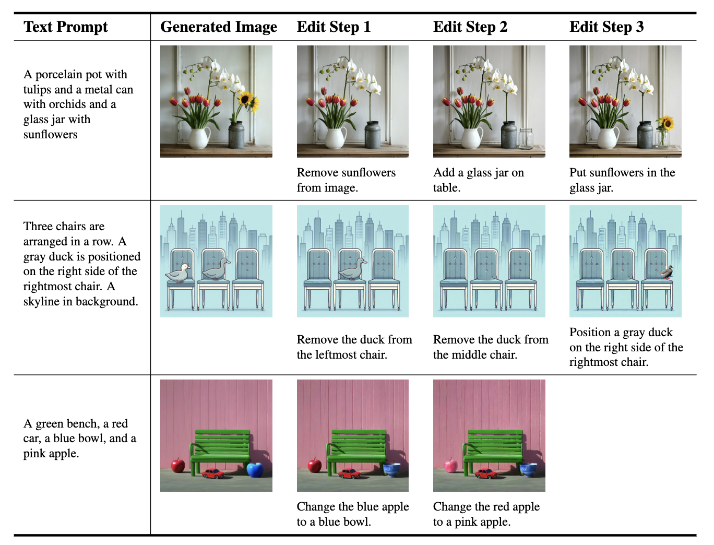

GraPE: A Generate-Plan-Edit Framework for Compositional T2I Synthesis

Text-to-image (T2I) generation has seen significant progress with diffusion models, enabling generation of photo-realistic images from text prompts. Despite this progress, existing methods still face challenges in following complex text prompts, especially those requiring compositional and multi-step reasoning. Given such complex instructions, SOTA models often make mistakes in faithfully modeling object attributes, and relationships among them.
In this work, we present an alternate paradigm for T2I synthesis, decomposing the task of complex multi-step generation into three steps, (a) Generate: we first generate an image using existing diffusion models (b) Plan: we make use of Multi-Modal LLMs (MLLMs) to identify the mistakes in the generated image expressed in terms of individual objects and their properties, and produce a sequence of corrective steps required in the form of an edit-plan. (c) Edit: we make use of an existing text-guided image editing models to sequentially execute our edit-plan over the generated image to get the desired image which is faithful to the original instruction. Our approach derives its strength from the fact that it is modular in nature, is training free, and can be applied over any combination of image generation and editing models. As an added contribution, we also develop a model capable of compositional editing, which further helps improve the overall accuracy of our proposed approach. Our method flexibly trades inference time compute with performance on compositional text prompts. We perform extensive experimental evaluation across 3 benchmarks and 10 T2I models including DALLE-3 and the latest -- SD-3.5-Large. Our approach not only improves the performance of the SOTA models, by upto 3 points, it also reduces the performance gap between weaker and stronger models.
Our method takes as input a few images (typically 3-5 images suffice, based on our experiments) of a subject (e.g., a specific dog) and the corresponding class name (e.g. "dog"), and returns a fine-tuned/"personalized'' text-to-image model that encodes a unique identifier that refers to the subject. Then, at inference, we can implant the unique identifier in different sentences to synthesize the subjects in difference contexts.

Given ~3-5 images of a subject we fine tune a text-to-image diffusion in two steps: (a) fine tuning the low-resolution text-to-image model with the input images paired with a text prompt containing a unique identifier and the name of the class the subject belongs to (e.g., "A photo of a [T] dog”), in parallel, we apply a class-specific prior preservation loss, which leverages the semantic prior that the model has on the class and encourages it to generate diverse instances belong to the subject's class by injecting the class name in the text prompt (e.g., "A photo of a dog”). (b) fine-tuning the super resolution components with pairs of low-resolution and high-resolution images taken from our input images set, which enables us to maintain high-fidelity to small details of the subject.
Results for re-contextualization of a bag and vase subject instances. By finetuning a model using our method we are able to generate different images of the a subject instance in different environments, with high preservation of subject details and realistic interaction between the scene and the subject. We display the conditioning prompts below each image.
Original artistic renditions of our subject dog in the style of famous painters. We remark that many of the generated poses were not seen in the training set, such as the Van Gogh and Warhol rendition. We also note that some renditions seem to have novel composition and faithfully imitate the style of the painter - even suggesting some sort of creativity (extrapolation given previous knowledge).
Our technique can synthesized images with specified viewpoints for a subject cat (left to right: top, bottom, side and back views). Note that the generated poses are different from the input poses, and the background changes in a realistic manner given a pose change. We also highlight the preservation of complex fur patterns on the subject cat's forehead.
@article{ruiz2022dreambooth,
title={DreamBooth: Fine Tuning Text-to-image Diffusion Models for Subject-Driven Generation},
author={Ruiz, Nataniel and Li, Yuanzhen and Jampani, Varun and Pritch, Yael and Rubinstein, Michael and Aberman, Kfir},
booktitle={arXiv preprint arxiv:2208.12242},
year={2022}
}
Acknowledgements:
Recycling a familiar template ;)